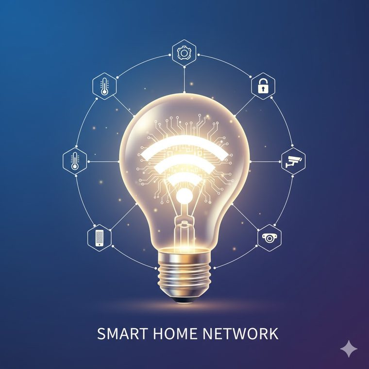
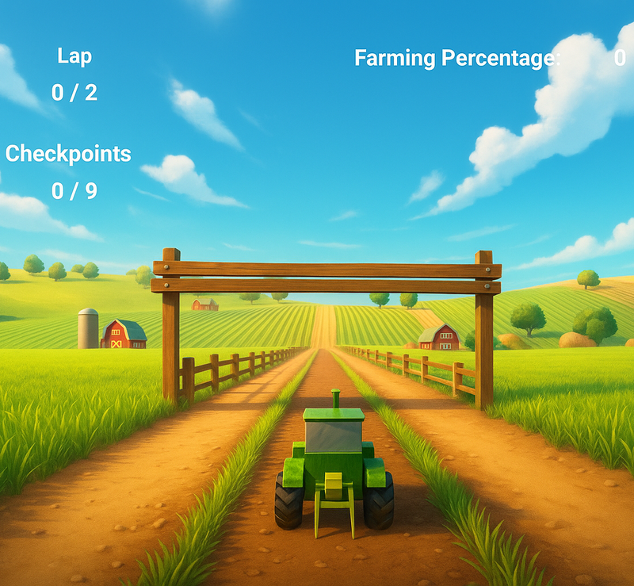
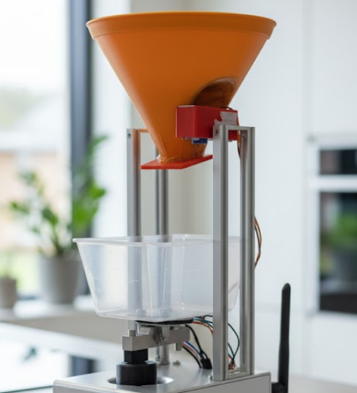

Experience
Software Developer · Front-End & IoT
Delivering production-ready features in an Agile team: front-end work, API integration and IoT systems.
Software Engineering (Honours) student at Deakin University with past experience at HAVI Technology. I turn real-world problems into working software - from web apps and REST APIs to IoT networks that link hardware and the cloud.

I'm a final-year Software Engineering (Honours) student at Deakin University, based in Melbourne. I love building things that solve real problems - web apps, REST APIs, and IoT systems that connect hardware and software.
I've worked across the stack with React, Node.js, ASP.NET Core and C++, and was previously an intern developer at HAVI Technology, where I gained hands-on experience with modern development practices, API integrations and team collaboration. My goal is to keep growing as an engineer and design software that makes everyday tasks simpler and more connected.
Software Developer · Front-End & IoT
Delivering production-ready features in an Agile team: front-end work, API integration and IoT systems.
B. Software Engineering (Honours)
Focus on full-stack development, IoT systems and software architecture. Honours thesis on monitoring autonomous systems.

Lesson-aware tutoring chatbot with file upload and chat history. Led front-end and UI/UX with a focus on accessibility.
BugBox is a chat-based tutoring bot that helps students learn through lesson-aware conversations. It answers questions in the context of a specific lesson, accepts file uploads for richer help, and keeps a history of past chats.
I led the front-end and UI/UX as part of an Agile team, and contributed to planning and documentation. Accessibility was a priority, so I worked to meet WCAG standards.
Delivered a working tutoring tool in a team setting and strengthened my React, API integration and accessibility skills.

Scalable multi-node lighting network with auto/manual modes, ambient sensing and a real-time dashboard.
A scalable smart lighting system where several lighting nodes are controlled in real time from a central dashboard. It supports automatic and manual modes and senses ambient light to adjust brightness.
I designed and built the full system end to end: the embedded firmware, the messaging layer and the dashboard.
Learned event-driven design, real-time messaging and how to connect embedded devices to the cloud.
REST API with authentication, maps and robot commands built on an N-tier architecture and tested in Postman.
A REST API that drives a simulated robot, exposing endpoints for maps and robot commands with authentication and authorization built in.
I designed and implemented the API using a clean N-tier architecture, then tested every endpoint in Postman.
Deepened my understanding of API design, layered architecture and securing endpoints in C#.

Team Agile project: a racing game with a lap system, power-ups and racing mechanics, with CI on GitHub.
A farm-themed racing game built by a team using Agile. Players race around a track with a lap system and power-ups.
I helped coordinate the Agile process and contributed to gameplay development.
Practised Agile teamwork, version control and game development in Unity.

Dispenses food to a target weight using a load cell and servo, with a Raspberry Pi GUI and telemetry.
An automatic feeder that dispenses food until a target weight is reached, with a simple Raspberry Pi interface and feed telemetry.
I built the hardware control and the interface that sets targets and monitors each feed.
Combined sensors, actuators and a GUI into one reliable embedded system.
Performance comparison and benchmarks across std::thread, OpenMP and MPI for compute-heavy workloads.
A study comparing three ways to parallelise compute-heavy work in C++, measuring how each approach scales as the workload grows.
I implemented the same workload three different ways and benchmarked them against each other.
Learned the trade-offs between threading models and how to measure real performance gains.
My Honours research looks at how to keep remote autonomous systems, such as drones and robots, running reliably by watching their health in real time and catching faults before they cause downtime.
Collecting and tracking live health metrics from remote systems as they operate.
Spotting failures and anomalies early, before they turn into bigger problems.
Making sense of streamed sensor and status data to understand system behaviour.
I'm open to graduate and junior software engineering roles, and always happy to chat about a project. The fastest way to reach me is email.
danielmattioli2005@gmail.com